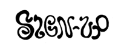

Ceramic workshops with Im Not Messy Im Creative
At Cosmos Campolide
@cosmos.cac · Cultural Center
The Classes are held in the private and cosy studio of Im Not Messy Im Creative
at Cosmos.Cac / Campolide Atlethico Clube, an old sports association, cultural-center & bar.
Maximum capacity per class is 5 people/class.
Which makes these classes a unique and intimate experience.
Classes are held on:
Saturdays 12 PM - 2 PM
Mondays 7 PM - 9 PM
You will learn:
- Handbuilding techniques
- Sculpturing with clay
- Engobe Painting
- Kiln preparation and Glazing
